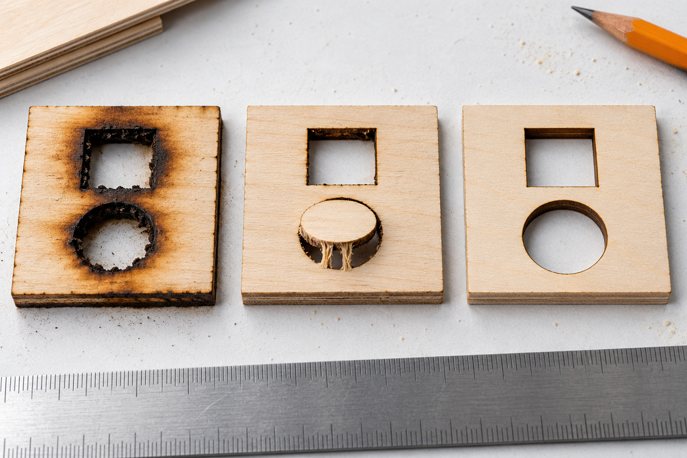

Identify the mark before cleaning
Compare the area around the engraved shape with the engraved shape itself. A broad haze can be a smoke deposit, while a deeply darkened groove may indicate excessive exposure. Note whether the marks occur on every side, only behind the scan direction, or on the underside. Do not handle a hot or smoldering sample.

Check the processing setup
NOVA's FAQ identifies processing parameters and air-pump operation as relevant checks for directional burn marks. Those are checks to separate, not reasons to increase power.
- Inspect the artwork for duplicated paths or overlapping layers.
- Confirm the intended engraving mode and speed units.
- Check that accessible air tubing is not kinked and exhaust openings are clear.
- Check the bed and scraps with power off, following the applicable cleaning guide.
Test a small change
Use an offcut from the same batch and compare one controlled change at a time. Record whether the haze, engraving darkness or edge damage changed. A surface coating, finish or adhesive can alter the result even when the underlying board is the same species.
Masking is not a ventilation repair
Only use masking whose complete composition is suitable for the documented process. Unknown tape or a stronger adhesive can introduce a new material hazard. Persistent smoke leakage, failed airflow, burning, or recurring alarms requires stopping the job and resolving the cause, not hiding the marks under tape.